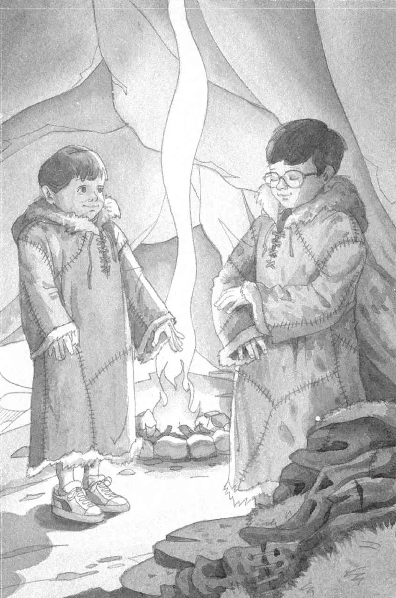

杰克和安妮轻手轻脚地摸到洞穴口，朝里面望去。
里面有一个火堆，火苗跳跃着，发出红色的光。
在离火很近的地方，放着刀、斧和掏空了的石头。
墙上整整齐齐地钉着一些兽皮。
“肯定有人住在这儿。”安妮说。
“也许，这里就是我们看见的那几个克鲁马努人的家。”杰克环顾着四周说道。
“我们进去暖和暖和吧。”安妮说。
杰克和安妮轻轻走到火边，伸出手去烤火。
他们的影子在石墙上晃动。
杰克掏出那本冰川时代的书，找到一幅洞穴的图片。他念道：
克鲁马努人能用动物、植物和石头做许多东西。他们用猛犸象的骨头做出类似长笛的乐器，把植物纤维编织成绳子，还用石头制作斧头和刀子。
杰克掏出笔记本和铅笔，写道：
“看我！”安妮说。
杰克抬头一看，安妮身上穿着一件大衣。
大衣有帽子，袖子长长的。衣摆几乎垂到安妮的运动鞋上。
“你是从哪儿拿的？”杰克说。
“从那堆毛乎乎的兽皮上。”安妮用手指着说，“那些肯定是他们的衣服，可能还没有完全缝好。”
她拿起另一件大衣，递给了杰克。
“试试这件吧，真的很暖和。”她说。
杰克把背包和毛巾放在硬邦邦的泥土地上，然后穿上了那件大衣。他感觉确实非常暖和——而且很柔软。
“我们看起来就像洞穴里的孩子。”安妮说。
“吱吱。”小老鼠从杰克放在地上的背包里探出了脑袋。
“你待在里面别动，”安妮说，“这里没有适合你穿的衣服。”
小老鼠缩回背包里。
“不知道这些大衣他们是怎么做成的。”杰克好奇地说。
他打开书翻了翻，找到一幅图片，上面是一些克鲁马努女人在做针线活。他念道：
克鲁马努女人用燧石摩擦驯鹿皮，使其变得柔软。她们用骨针把兽皮缝在一起，做成衣服。
杰克在他的笔记本上加了一行：

“我们借克鲁马努人的衣服穿，但愿他们不会生气。”杰克说。
“为了感谢他们，”安妮说，“也许我们应该把我们的毛巾送给他们。”
“好主意。”杰克说。
“还有我的游泳镜。”安妮加了一句。
他们把这两件礼物放在了剩下的那些兽皮上面。
“趁他们还没有回家，我们在洞穴里好好看看吧。”杰克提议道。
“那里面太黑了，”安妮说，“什么都看不清。”
“我要弄明白克鲁马努人是怎么能在黑暗中看见东西的。”杰克说。
他打开冰川时代的书，找到了一幅图片，上面画着一些克鲁马努人，拎着奇形怪状的提灯。
他把图片下面的文字大声念给安妮听：
克鲁马努人会做石灯。他们把石头掏空，在里面填
满动物脂肪，然后把用苔藓做的灯芯点燃。
“那儿！”安妮指着火边的两块石头说。
石头被掏空的地方有一些黏糊糊的白色东西，还有一根苔藓。
“我们必须多加小心。”杰克说。
他拿起其中一块石头。石头比汤碗小一些，但是却重得多。
杰克把它凑到火堆边，点燃了石头中心的那根苔藓。
然后，他把另一盏石灯也点亮，递给安妮。
“用两只手捧着。”他吩咐道。
“我知道。”安妮回答。
杰克把书夹在胳膊底下。他和安妮捧着石灯，朝洞穴里面走去。
“嘿，真想知道这个口会通往哪儿。”安妮说着举起石灯，照向墙上的一个开口处。
“我在书里查查看。”杰克说。
他放下手里的石灯，飞快地翻着那本冰川时代的书。
“我想这是一条地道。”安妮说道，“我去看看就来。”
“等一下。”杰克急忙说。
可是晚了——安妮已经钻了进去，不见了踪影。
“唉，真没办法。”杰克叹着气说道。
他合上书，往开口里张望。
“快回来！”他叫道。
“不！你到这儿来！”安妮回答。她的声音听上去很遥远。“你看了肯定不会相信的！”
杰克拿起书和石灯。他一猫腰，也钻进了这条狭小的地道。
“哇！”安妮的声音从那边传来。
杰克可以看见安妮的石灯在地道的另一头闪烁。
杰克俯下身子，匆匆地朝安妮跑去。在地道的尽头，有一个特别大的洞穴，洞顶很高。
安妮把石灯凑近墙壁。
“看。”她的声音在洞穴里回荡。
墙上用红色、黑色和黄色的笔画着各种动物。
有大洞熊、狮子、大角鹿，还有驯鹿、野牛、长毛犀牛和猛犸象。
在跳跃的火光下，这些史前动物看上去像活的一样。